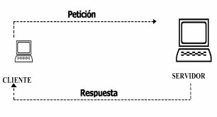

Proceso de comunicación cliente - servidor
Modelo cliente - servidor
El modelo cliente - servidor tiene dos partes diferenciadas:
-
Lado servidor
el lado servidor suele ser un ordenador que actúa como deposito de datos, a parte contiene software especifico que ofrece servicios a el lado cliente.
-
Lado cliente
el lado cliente puede ser uno o mas ordenadores que solicitan diferentes recursos o servicios al servidor.
Las transacciones en este modelo funcionan de la siguiente manera:

Como podemos observar el cliente y el servidor están dentro de la misma red, el cliente crea una petición dirigida al servidor en la cual le pide algún recurso que el mismo necesite, una vez recibida la petición el servidor procede a enviarle ese recurso al cliente.
Componentes
-
red
Conjunto de clientes, servidores y bases de datos unidos física o virtualmente, en el que existen protocolos de transmisión de información establecidos.
-
cliente
El concepto de cliente hace referencia a un demandante de un servicios, este cliente puede ser un pc como también una aplicación informática, la cual requiere información proveniente de la red para funcionar.
-
servidor
Un servidor hace referencia a un proveedor de servicios, este servidor a su vez puede ser un ordenador o una aplicación informática la cual envía información a los demás agentes de la red.
-
protocolos
Los protocolos son conjuntos de normas o reglas y pasos establecidos de manera clara y concreta sobre el flujo de información en una red estructurada.
-
servicios
Un servicio es un conjunto de información que busca responder las necesidades de un cliente, donde esta información puede ser un mal, música, mensajes simples entre software, videos, etc.
-
base de datos
Son bancos de información ordenada, categorizada, y clasificada que forman parte de la red, que son sitios de almacenajes para la utilización de los servidores y también directamente de los clientes.
Proceso de carga de una página Web
Antes de explicar como funciona el proceso de carga de una pagina web hay que tener en cuenta que las paginas web son construidas con una mezcla de varios lenguajes de programación, la secuencia de ejecución de estos lenguajes esta ligada al concepto de carga y ejecución de una página web.
Lenguaje de lado servidor PHP
Es un lenguaje que se ejecuta en el servidor, es un lenguaje de propósito general muy enfocado en el desarrollo web, es especialmente útil para la comunicación con la base de datos del servidor, usualmente MySQL, php es usado para crear páginas con contenido enriquecido.
Lenguaje html
HTML es un lenguaje de marcas, es la base de la página web, indica como está construida una página web y los elementos que contiene, como un hipervínculo, imágenes, objetos… y como están organizados, para la construcción de una página web tanto dinámica como estática necesitaras usar HTML.
Lenguaje de script del navegador JavaScript
Con Javascript se pueden manejar todos los eventos y hacer que una página web actúe de una forma dinámica, va embebido dentro de HTML y actúa cuando se ejecuta cierto evento.
Una página web puede estar escrita solo con HTML, con HTML y PHP, con HTML y Javascript o combinando los 3.
AJAX
AJAX significa Asynchronus JavaScript And XML. No es un lenguaje de programación sino una herramienta para comunicar JavaScript y PHP, es decir realizar peticiones a tu servidor, sin necesidad de recargar la página. Digamos que permite a JavaScript enviar un mensaje a un script de PHP, el cual se ejecutará en el servidor, sin interferir con la ejecución de la página, y al final enviará una respuesta.
Proceso de carga y ejecución
- 1 Se envía la solicictud al servidor. Este la recibe y comienza el proceso de construir la página web. Si existe código PHP, se ejecuta en este momento, se hacen todas las consultas a la Base de Datos. El resultado es una página con HTML y tal vez JavaScript.
- 2 Tu navegador recibe la página, interpreta y usa el HTML para construirla. La tienes en pantalla.
- 3 Mientras interactúas con la página, todo es procesado por Javascript. Interactúara contigo respondiendo a tus eventos, hasta que cierres la página.
- 4 Si necesitas una consulta a la BD, para no cargar otra página, se puede utilizar la tecnología AJAX que permite a JavaScript mandar peticiones a scripts de PHP. Javascript recibe como respuesta cadenas de texto, y en base a la respuesta puede dibujar nuevos elementos de la interfaz gráfica o cambiarlos. Tienes una página interactiva.